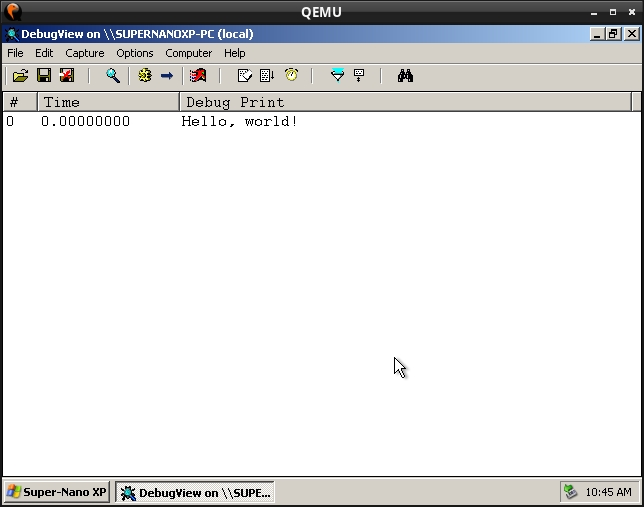

Steward
分享是一種喜悅、更是一種幸福
驅動程式 - Windows Driver Model (WDM) - 使用範例 - Assembly (ObjAsm) - Hello, world!
參考資訊：
https://wasm.in/
http://four-f.narod.ru/
https://github.com/steward-fu/wadk
main.asm
;;
;; Hello, world!
;; https://steward-fu.github.io/website/index.htm
;;
%include @Environ(OBJASM_PATH)/Code/Macros/Model.inc
SysSetup OOP, WDK_WDM, ANSI_STRING
MakeObjects Primer, KDriver, KPnpDevice, KPnpLowerDevice
Object MyDriver, , KDriver
RedefineMethod Unload
RedefineMethod AddDevice, PDEVICE_OBJECT
RedefineMethod DriverEntry, PUNICODE_STRING
RedefineMethod DriverIrpDispatch, PIRP
ObjectEnd
Object MyDevice, , KPnpDevice
RedefineMethod Init, PDEVICE_OBJECT
RedefineMethod DefaultPnp, PKIrp
RedefineMethod DeviceIrpDispatch, PIRP
Embed m_pMyLowerDevice, KPnpLowerDevice
ObjectEnd
DECLARE_DRIVER_CLASS MyDriver, NULL
Method MyDriver.DriverEntry, uses esi, pMyRegistry : PUNICODE_STRING
mov eax, STATUS_SUCCESS
MethodEnd
Method MyDriver.AddDevice, uses esi, pPhyDevice : PDEVICE_OBJECT
T $OfsCStr("Hello, world%c"), 21h
New MyDevice
push eax
OCall eax::MyDevice.Init, pPhyDevice
pop eax
MethodEnd
Method MyDriver.DriverIrpDispatch, uses esi, pMyIrp : PIRP
SetObject esi
OCall DriverObject
mov eax, (DRIVER_OBJECT ptr [eax]).DeviceObject
mov eax, (DEVICE_OBJECT ptr [eax]).DeviceExtension
OCall eax::MyDevice.DeviceIrpDispatch, pMyIrp
MethodEnd
Method MyDriver.Unload, uses esi
ACall Unload
MethodEnd
Method MyDevice.Init, uses esi, pPhyDevice : PDEVICE_OBJECT
ACall Init, \
$OfsCStrW("\Device\MyDriver"), \
FILE_DEVICE_UNKNOWN, \
NULL, \
0, \
DO_BUFFERED_IO
SetObject esi
OCall [esi].m_pMyLowerDevice::KPnpLowerDevice.Initialize, \
[esi].m_pMyDevice, \
pPhyDevice
OCall SetLowerDevice, addr [esi].m_pMyLowerDevice
MethodEnd
Method MyDevice.DeviceIrpDispatch, uses esi, pMyIrp : PIRP
ACall DeviceIrpDispatch, pMyIrp
MethodEnd
Method MyDevice.DefaultPnp, uses esi, I : PKIrp
SetObject esi
OCall I::KIrp.ForceReuseOfCurrentStackLocationInCalldown
OCall [esi].m_pMyLowerDevice::KLowerDevice.PnpCall, I
MethodEnd
end
main.inf
[Version] Signature=$CHICAGO$ Class=Unknown Provider=%MFGNAME% DriverVer=01/01/2026,1.0.0.0 [Manufacturer] %MFGNAME%=DeviceList [DeviceList] %DESCRIPTION%=DriverInstall, *MyDriver [DestinationDirs] DefaultDestDir=10,System32\Drivers [SourceDisksFiles] main.sys=1,,, [SourceDisksNames] 1=%INSTDISK%,,, [DriverInstall.NT] CopyFiles=DriverCopyFiles [DriverCopyFiles] main.sys,,,2 [DriverInstall.NT.Services] AddService=FILEIO,2,DriverService [DriverService] ServiceType=1 StartType=3 ErrorControl=1 ServiceBinary=%10%\system32\drivers\main.sys [DriverInstall.NT.HW] AddReg=DriverHwAddReg [DriverHwAddReg] HKR,,MyDriver,,"" [DriverInstall] AddReg=DriverAddReg CopyFiles=DriverCopyFiles [DriverAddReg] HKR,,DevLoader,,*ntkern HKR,,NTMPDriver,,main.sys [DriverInstall.HW] AddReg=DriverHwAddReg [Strings] MFGNAME="MyDriver" INSTDISK="MyDriver Disk for Installation" DESCRIPTION="Windows Device Driver by Steward"
autorun.inf
[autorun] open=run.bat
run.bat
c:\devcon install e:\main.inf *mydriver c:\devcon remove e:\main.inf *mydriver
fix.py
import pefile
pe = pefile.PE("main.sys");
pe.OPTIONAL_HEADER.CheckSum = pe.generate_checksum();
pe.write("main.sys");
Makefile
all: uasm -coff -c -q -less main.asm lld-link main.o /driver /base:0x10000 /subsystem:native /entry:DriverEntry /safeseh:no "/opt/wadk/masm32/lib/wxp/i386/ntoskrnl.lib" /out:main.sys python3 fix.py run: genisoimage -f -o cdrom.iso * /opt/wadk/tools/sc.exe myqemu winxp clean: rm -rf main.sys main.o cdrom.iso
編譯
$ make $ make run
完成
